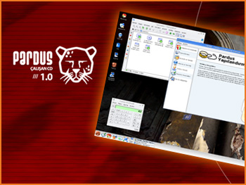

|
|

Pardus 1.0 için son düzlük koşuluyor!
1 Aralık 2005 Pardus 1.0Beta'nın duyurulduğu tarih oldu.
Ulusal Dağıtım Projesi kapsamında geliştirilen ve Beta sürümle gelen araçların yardımıyla
sisteminize Pardus 1.0Beta'yı kolayca kurabilir ve deneyebilirsiniz. Bulduğunuz hataları ya da projenin herhangi bir bölümüyle ilgili önerilerinizi Uluzilla hata takip sistemi aracılığıyla bize bildirebilirsiniz.
Pardus 1.0Beta
Linux'un, getirdiği açık standartlar,
serbest dağıtılabilme ve özgür yazılım kullanım
avantajları ile kamu ve özel sektörde daha serbest
ve güvenilir teknolojinin önünü açma ve
bireylerin bilgisayar ile tanışmasını hızlandırma amaçları doğrultusunda 26 Aralık tarihinde ilk kararlı sürümün yayınlanması hedefleniyor.
Pardus,
özgür yazılım yaklaşımı ile açık kaynaklı yayımlanmakta ve GNU Genel Kamu Lisansı (General Public License – GPL) ile özgürce dağıtılmaktadır. Bu
karar 30 Ocak 2005'te yayınlanan Uludağ Haftalık Bülteni'nde açıklanmıştı.
|
|
|
|
|
Uludağ Haberleri
|
 Uludağ Bülteni
Uludağ Bülteni
|
 01 Kasım 2005
// Kurulan CD'ye yaklaşıyoruz: Pardus kök dosya sistemi versiyon 0.2 bugün yayınlandı. Daha fazla bilgi için tıklayın.
01 Kasım 2005
// Kurulan CD'ye yaklaşıyoruz: Pardus kök dosya sistemi versiyon 0.2 bugün yayınlandı. Daha fazla bilgi için tıklayın.
06 Ekim 2005
// Pardus kök dosya sisteminin 0.1 numaralı, Çomar-Pisi ikilisini içeren sürümü yayınlandı.
02 Ağustos 2005
// Pardus'un Kurulum ve Kullanım Kılavuzu'nun yazılmasına başlandı. Proje ile ilgili tüm bilgilere
buradan ulaşabilirsiniz.
12 Temmuz 2005
// Pardus'un kurulan sürümü ile beraber gelecek olan, Uludağ Projesinin yeni nesil paket yöneticisi PİSİ'nin
ilk dökümanı yayınlandı!
|
2 Ağustos 2005
// Yeni geliştiriciler, PİSİ, ÇOMAR, KDE Türkiye...
10 Haziran 2005
// Yeni geliştiriciler, Pardul, Gözlük, SVN Depoları...
05 Mayıs 2005
// Pardus 1.1, Kök dosya sistemi 0.0.6, Pardul, Pardil, Zemberek, ViewCVS...
21 Mart 2005
// Web sayfası, Pardus 1.0, FTP hizmeti...
27 Şubat 2005
// Açık Kaynak Günleri, kalite takımı, yeni belgeler...
Önceki bültenler...
|
Ulusal Dağıtım sayfalarında bulunan bilgi ve belgelerin,
kaynak gösterilmek koşulu ile kullanılması serbesttir.
TÜBİTAK - UEKAE, PK.74 41470, Gebze / Kocaeli.
Bilgi ve önerileriniz için
bilgi at uludag.org.tr
|